三重锚固开挖墙的安装
问题描述
注意
要在 FLAC3D 中查看此工程，请使用菜单命令 。选择“ExampleApplications/AnchoredExcavation”，再选择“AnchoredExcavation.f3dprj”即可加载。该工程的主数据文件（main data file）在本示例末尾给出。
本示例应用以 Schweiger（2002）描述的基准算例（柏林砂中的深基坑问题）为基础。本示例采用的几何、基本假定和计算步骤均取自该基准算例。将墙体侧移和地表沉降的结果与实测值进行比较。本示例展示了 CYSoil 模型（CYSoil model） 和 塑性硬化（PH）模型（Plastic-Hardening (PH) model） 对深基坑问题的适用性。
基准算例中问题条件的示意图见图 1（Figure 1）。土层剖面由两层水平砂层组成。顶层（层 1）厚度为 20 m，底层（层 2）延伸至地表以下 100 m 深度。基坑宽 60 m，最终深度为 16.8 m。问题采用平面应变条件和半对称性。
本示例采用了取自 Schweiger（2002）的若干规定：
- 忽略地下连续墙施工的影响。
- 地下连续墙采用网格单元模拟（杨氏模量 = 30 GPa，泊松比 = 0.15，厚度 = 0.8 m）。
- 30 m 深度处的水平截水帷幕不视为结构支护；其力学性质假定与周围土体相同。
- 有效水平应力与有效竖向应力之比，采用正常固结材料的默认系数 \(K_{nc} = 1 - \sin{\phi}\)，层 1 为 0.43，层 2 为 0.38。
- 基坑内外保持对应于水位的水静水压力。基坑开挖开始前，已对基坑内地下水进行完全降水。
- 锚杆采用锚索模拟并进行预应力。注浆段允许将荷载传递给土体。

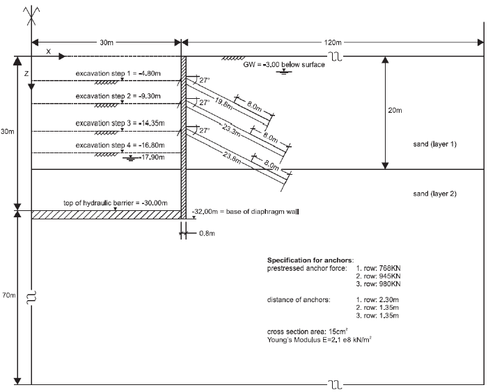
图 1：几何与开挖阶段（取自 Schweiger，2002）。
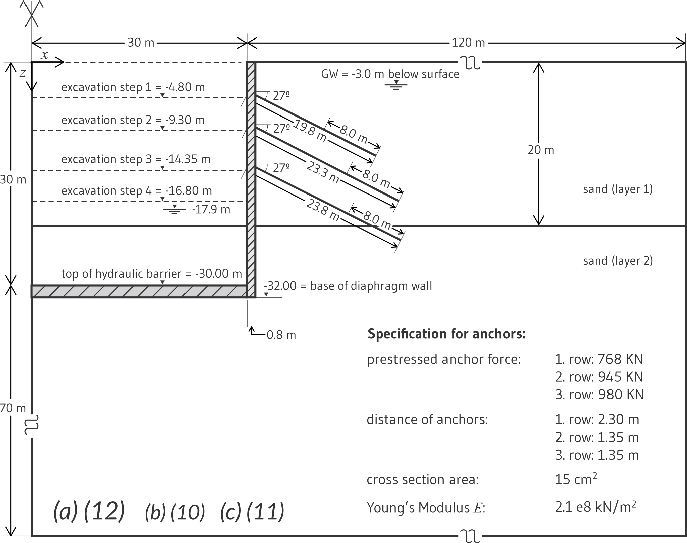
图 2：几何与开挖阶段（取自 Schweiger，2002）。(a) 为第一级字号，(b) 为第二级字号，(c) 为第三级字号。
Schweiger（2002）描述的分析包括九个步骤：
阶段 1——初始化应力状态，包括地下水位（位于地表以下 3 m）。
阶段 2——激活地下连续墙，并将基坑内水位降至 −17.90 m。
阶段 3——开挖第 1 步（至 −4.80 m 标高）。
阶段 4——在 −4.30 m 标高激活第 1 排锚杆并对锚杆施加预应力。
阶段 5——开挖第 2 步（至 −9.30 m 标高）。
阶段 6——在 −8.80 m 标高激活第 2 排锚杆并对锚杆施加预应力。
阶段 7——开挖第 3 步（至 −14.35 m 标高）。
阶段 8——在 −13.85 m 标高激活第 3 排锚杆并对锚杆施加预应力。
阶段 9——开挖第 4 步（至 −16.80 m 标高）。
网格单元剖面和结构单元见图 1（Figure 1）。土体采用塑性硬化模型模拟。墙体采用线弹性网格单元模拟。锚杆采用锚索结构单元模拟。
列于表 1（Table 1） 的柏林砂土性质改编自 Schweiger（2002）。
| 参数 | 单位 | 砂层 | 黏土层 |
|---|---|---|---|
| 干密度（\(\rho_d\)） | Mg/m3 | 1.9 | 1.9 |
| 湿密度（\(\rho_w\)） | Mg/m3 | 2.0 | 2.0 |
| \(E^{ref}_{50}\) | kPa | 4.5×104 | 7.5×104 |
| \(E^{ref}_{oed}\) | kPa | 4.5×104 | 7.5×104 |
| \(E^{ref}_{ur}\) | kPa | 1.8×105 | 3.0×105 |
| 摩擦角（\(\phi_f\)） | 度 | 35 | 38 |
| 剪胀角（\(\psi_f\)） | 度 | 5 | 6 |
| 参考压力（\(p_{ref}\)） | kPa | 100 | 100 |
| 泊松比（\(\nu\)） | 0.2 | 0.2 | |
| 黏聚力（\(C\)） | kPa | 0 | 0 |
| 指数（\(m\)） | 0.55 | 0.55 | |
| 固结应力比（\(K_0\)） | 0.43 | 0.38 | |
| 破坏比（\(R_f\)） | 0.90 | 0.90 | |
| 超固结比（\(ocr\)） | 1.0 | 1.0 |
地下连续墙的线弹性性质列于表 2（Table 2），锚杆规格列于表 3（Table 3）。
| 密度（Mg/m3） | 2.4 |
| 杨氏模量（GPa） | 30.0 |
| 泊松比 | 0.15 |
| 第 1 排 | 第 2 排 | 第 2 排 | |
|---|---|---|---|
| 墙面处的定位深度（m） | 4.80 | 9.30 | 14.35 |
| 倾角（度） | 27 | 27 | 27 |
| 总长度（m） | 19.8 | 23.3 | 23.8 |
| 锚固段长度（m） | 8.0 | 8.0 | 8.0 |
| 间距（m） | 2.3 | 1.35 | 1.35 |
| 锚杆预应力（kN） | 768 | 945 | 980 |
| 杨氏模量（GPa） | 210 | 210 | 210 |
| 横截面积（m2） | 0.0015 | 0.0015 | 0.0015 |
建模步骤
FLAC3D 模拟遵循 Schweiger（2002）建议的类似分析阶段。
模型条件
使用块体构建工具生成网格。使用模型窗格选择、命名并加密网格单元和面。两个工具生成的命令均从状态窗格导出。
为更精确地反映墙体侧移，对靠近地下连续墙的网格单元进行加密（图 3（Figure 3））。使用 按面分离单元命令（zone separate by-face） 命令将墙体与网格其余部分分离。请记住，在最后一次网格单元加密之后，要使用命令 单元附着按面（zone attach by-face） 附着各面。模型位于 \(x\) ∈ [0, 100]、\(z\) ∈ [-100, 0] 和 \(y\) ∈ [0, 2.7] 的域内，其中 \(x\) = 0 表示基坑中心的对称面。
滚动边界位于 \(x\) = 0 处，以体现对称条件；固定边界位于 \(z\) = -100 和 \(x\) = 150 处，代表远端条件。为模拟平面应变条件，\(y\) 轴方向不允许发生变形。
模型完成时未配置流体分析。只要使用 zone water 命令设置了重力、水密度和水位面信息，FLAC3D 即会自动初始化静水孔隙压力。地下水位面以上的土体赋予干密度，地下水位面以下的土体赋予湿密度。
在已获得孔隙压力、土体密度和正常固结系数的情况下，可使用命令 zone initialize-stresses 方便地初始化应力，其中由摩擦角计算 \(K_0\) 的过程在同一命令行内完成。
zone initialize-stress ratio [1-math.sin(35*math.degrad)] range group 'Layer1'
zone initialize-stress ratio [1-math.sin(38*math.degrad)] range group 'Layer2'
在该阶段，为设置初始应力，土体本构模型的精确行为并不关键，因此暂时对土体指定 Mohr-Coulomb 模型，并使用 模型弹性求解命令（model solve elastic） only 命令以避免可能出现的不均匀沉降。该阶段的数据文件为“AnchoredExcavation-1.dat”，结果存储在文件“part-1.f3sav”中。

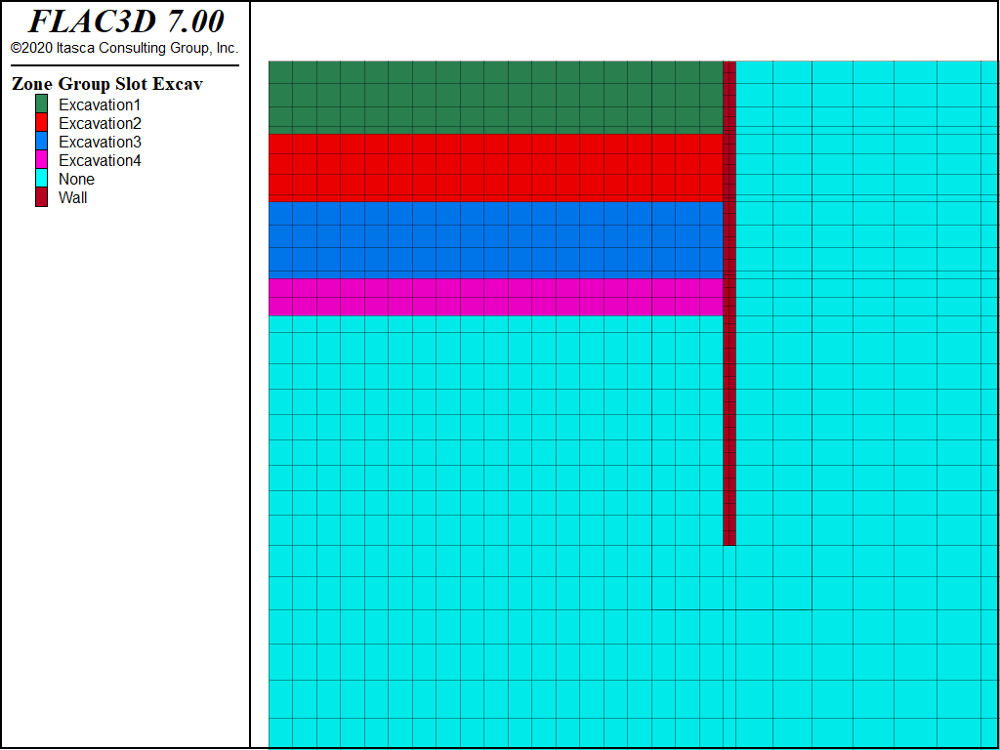
图 3：模型网格。
墙体安装
地下连续墙的激活（“AnchoredExcavation-2.dat”）通过将真实密度（2.4 Mg/m3）赋予墙体网格单元来模拟。此处地下连续墙采用线弹性实体网格单元模拟，其性质列于表 2（Table 2）。在墙体的侧面和底面指定接触面单元，以考虑墙体与土体之间的滑移和分离。请注意，使用 单元附着删除（zone attach delete） 命令释放先前分离的墙体与土体之间的边界，并使用 初始化界面节点应力命令（zone interface node initialize-stresses） 初始化接触面应力以加快收敛。接触面摩擦角假定为 20°。由于墙体比周围土体更重，预计会向下移动。还预计墙体周围土体中的主应力大小和方向将发生调整。模型状态存储在文件“part-2.f3sav”中。
塑性硬化模型设置
在该阶段（AnchoredExcavation-3.dat），土体模型改为塑性硬化模型，性质列于表 1（Table 1）。请注意，此处塑性硬化模型与应力相关，在首次为模型指定该模型后需要输入初始有效主应力。该步骤可通过 设置网格单元属性（zone property） 命令完成，或如本例中那样通过以下 FISH 函数 PH 初始化（ini_ph） 完成。
fish def ini_ph
loop foreach local z zone.list
if z.model(z) = 'plastic-hardening'
local pp = zone.pp(z)
zone.prop(z,'stress-1-effective') = zone.stress.min(_z) + pp
zone.prop(z,'stress-2-effective') = zone.stress.int(_z) + pp
zone.prop(z,'stress-3-effective') = zone.stress.max(_z) + pp
endif
endloop
end
该 FISH 函数必须在指定塑性硬化模型后首次循环之前执行。请注意，本例内部计算了两个参数：constant-alpha（\(\alpha\)）和 stiffness-cap-hardening（\(H_c\)）。在进入下一阶段之前，用户需检查这两个参数的有效性（见塑性硬化模型（Plastic-Hardening Model）定义中的体积帽盖准则与流动法则（Volumetric Cap Criterion and Flow Rule））[ZC：请检查上述链接是否指向正确位置]。达到平衡后，模型状态存储在“part-3.f3sav”中。
| constant-alpha | stiffness-cap-hardening | |
|---|---|---|
| 层 1 | 1.87 | 1.07×105 |
| 层 2 | 3.23 | 6.69×104 |
降水
对于降水阶段（“AnchoredExcavation-4.dat”），为简化起见，假定基坑范围内的水位瞬时下降。我们从前一步出发，将当前开挖区域的饱和度、孔隙压力和渗透率设为零。释放左边界开挖以下部分以及模型顶部开挖右侧部分沿线的固定孔隙压力条件，以便降水过程中孔隙压力可以变化。将模型中的位移初始化为零，以便监测仅由降水引起的位移变化。
当我们施加孔隙压力变化时，必须调整总应力以考虑该变化。这通过在用于修改孔隙压力的 zone water 命令中使用 effective 关键字来实现。
可通过在执行这些命令前后绘制有效应力来检查总应力是否已作出该调整：在施加瞬时孔隙压力时，模型中的有效应力保持不变。
我们重复该降水过程五次，以考虑一定程度的渐进降水。最终孔隙压力分布见图 4（Figure 4）。降水引起的位移见图 5（Figure 5）。这表明降水引起的沉降量约为 0.01 m。完成所有降水步骤后，将模型状态保存为“part-4.f3sav”。

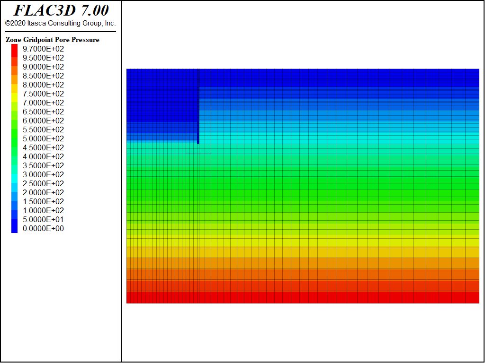
图 4：降水后的孔隙压力分布。

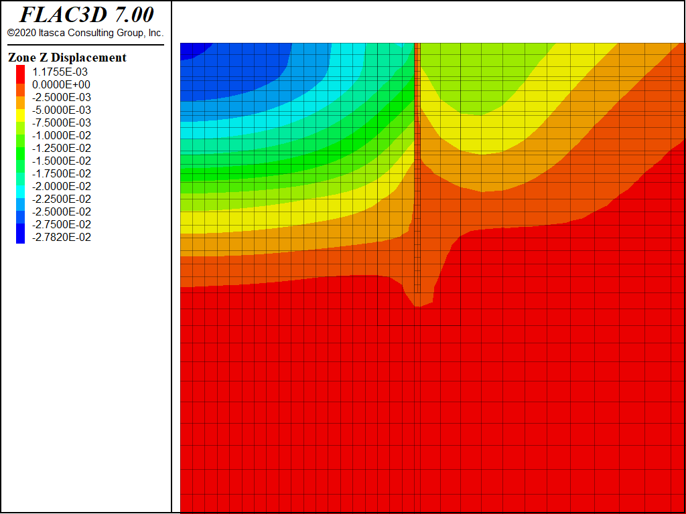
图 5：降水引起的位移。
开挖与安装锚杆
在开挖阶段开始时将位移重置为零。分析中忽略开挖引起的孔隙压力变化。为模拟开挖第 1 步（深 4.8 m）的开挖过程，从网格中删除网格单元，并将模型循环计算至力学平衡（“AnchoredExcavation-5.dat”）。开挖至 4.8 m 深度引起的位移绘于图 6（Figure 6）。

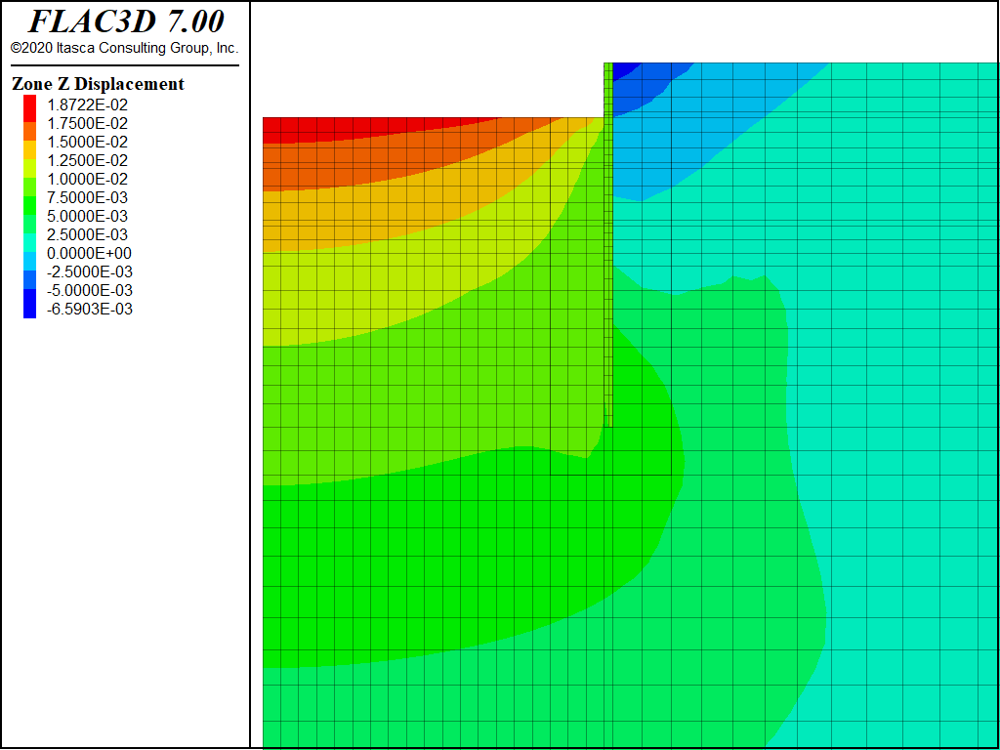
图 6：开挖至 4.8 m 深度引起的位移。
在开挖第 1 步标高处以 27° 倾角安装一根长 19.8 m 的锚索结构单元（“AnchoredExcavation-6.dat”）。锚索上端连接于墙体，最后 8 m 锚固于土体（剪切黏结强度为 100 MPa）。锚杆以 901.6 kN 的力施加预应力，该力由原始预应力锚固力（768 kN）按 2.7/2.3 的比例调整而来，其中 2.7 m 为模型平面外宽度，2.3 m 为第 1 排锚杆的间距（见图 1（Figure 1） 中的规格）。预张拉使用 施加锚索单元拉力命令（structure cable apply tension） 命令完成，其过程为：（1）对锚索未注浆段施加拉力；（2）求解模型至平衡；（3）释放锚索上的拉力，使其此后自然调整。图 7（Figure 7） 绘出了第 1 排锚杆预张拉后的锚杆轴力。

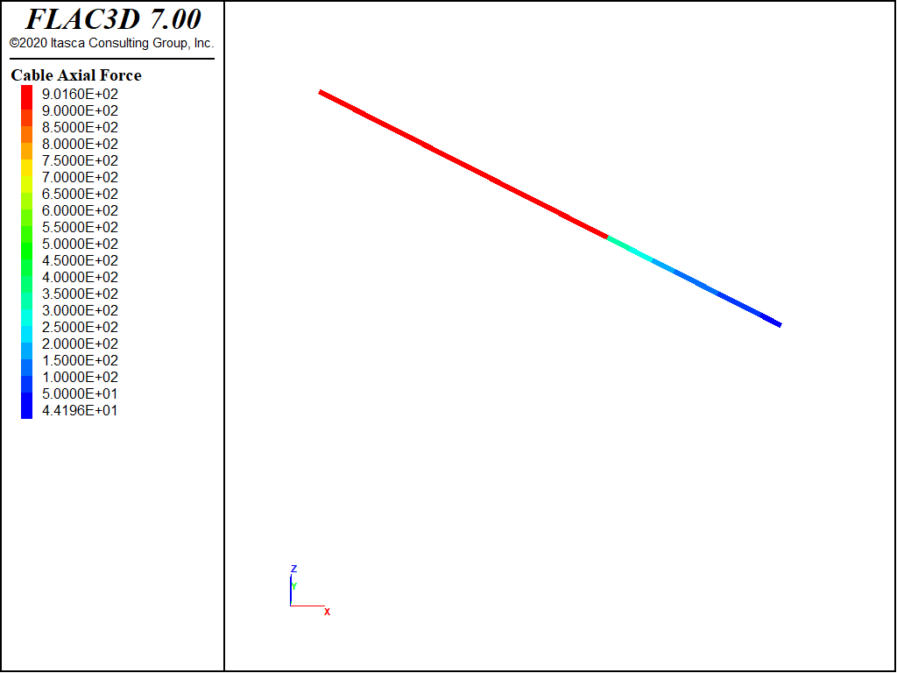
图 7：预张拉后深度 4.8 m 处锚杆的轴力。
随后将网格中的网格单元拆除至 9.3 m 深度，并将模型循环计算至力学平衡（“AnchoredExcavation-7.dat”）。开挖至 9.3 m 深度引起的位移绘于图 8（Figure 8）。

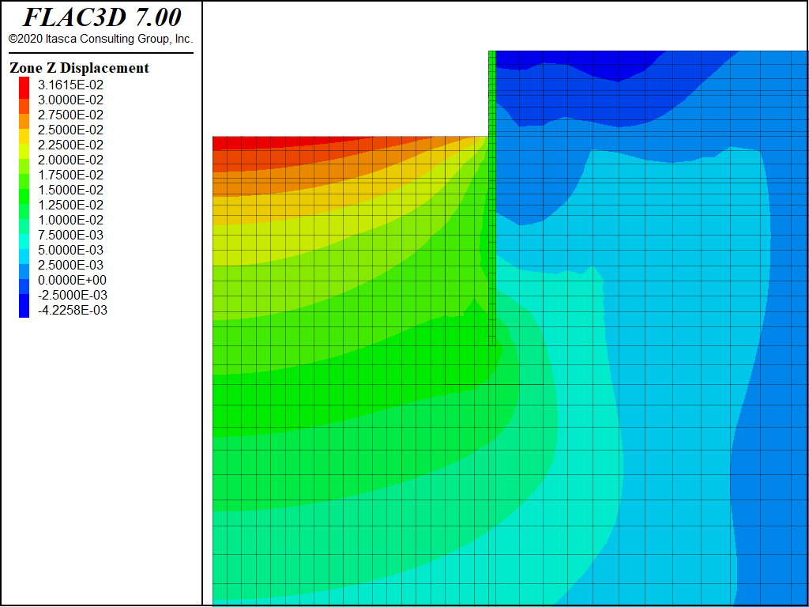
图 8：开挖至 9.6 m 深度引起的位移。
现在以同样方式安装第二排长 23.3 m 的锚杆，并以 945 kN 的力施加预应力（“AnchoredExcavation-8.dat”）。图 9（Figure 9） 绘出了第 2 排锚杆预张拉后的锚杆轴力。

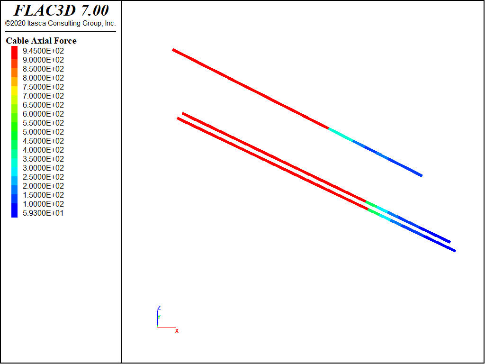
图 9：预张拉后深度 9.6 m 处锚杆的轴力。
随后拆除网格单元以开挖至 14.35 m 深度，并再次将模型循环计算至平衡（“AnchoredExcavation-9.dat”）。开挖至 14.35 m 深度引起的位移绘于图 10（Figure 10）。

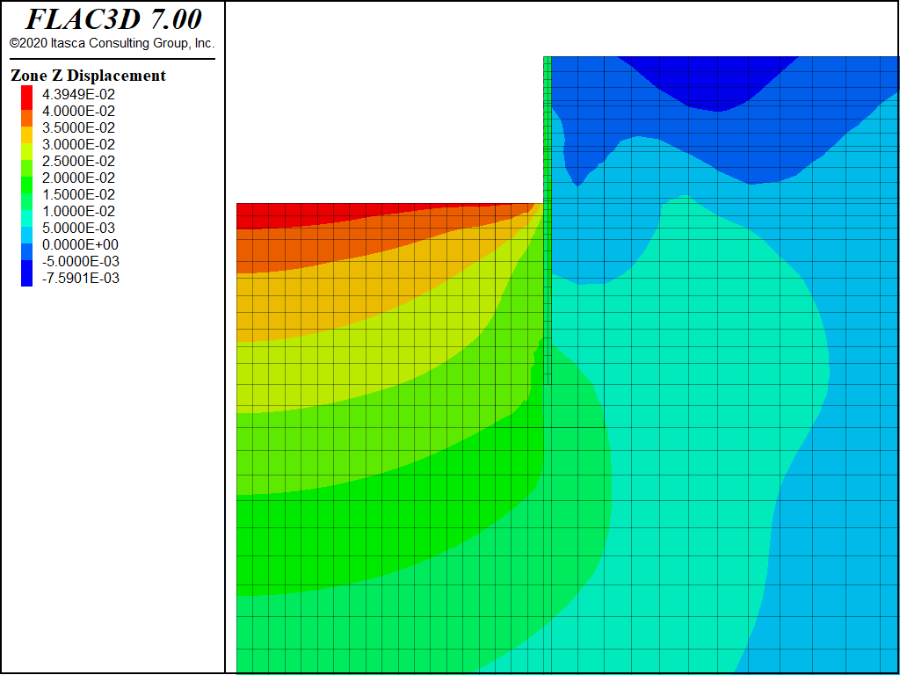
图 10：开挖至 14.35 m 深度引起的位移。
对第三排长 23.8 m、预应力 980 kN 的锚杆重复该过程（“AnchoredExcavation-10.dat”），并开挖至最终深度 16.8 m（“AnchoredExcavation-11.dat”）。安装第三排锚杆后的锚杆轴力绘于图 11（Figure 11），开挖至 14.35 m 深度引起的位移绘于图 12（Figure 12）。

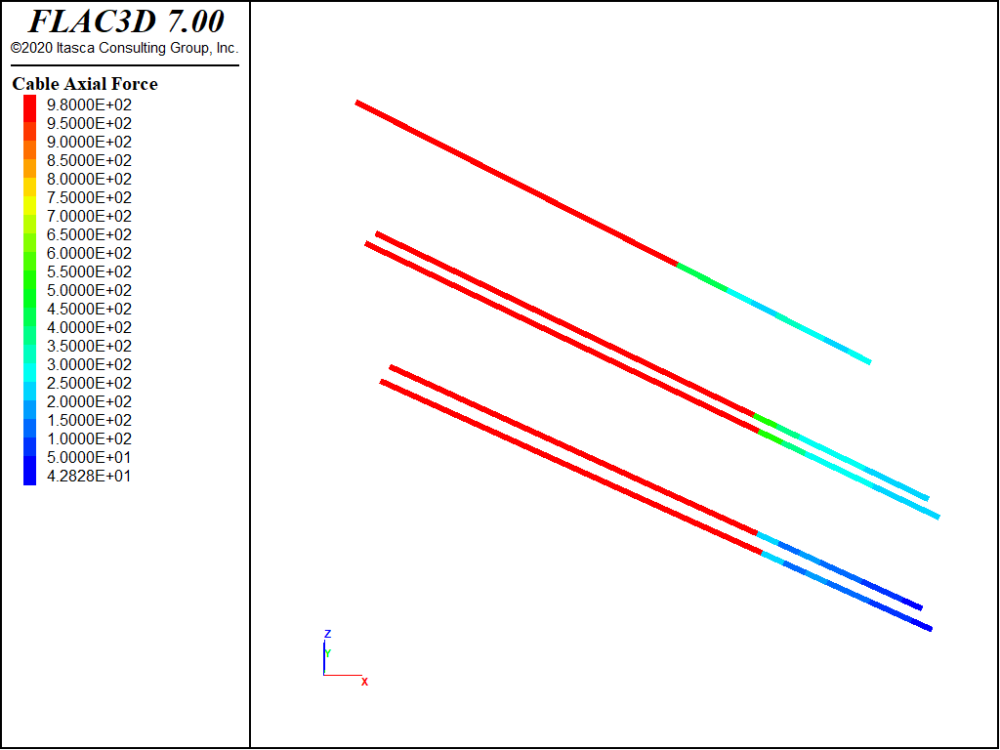
图 11：预张拉后深度 13.45 m 处锚杆的轴力。

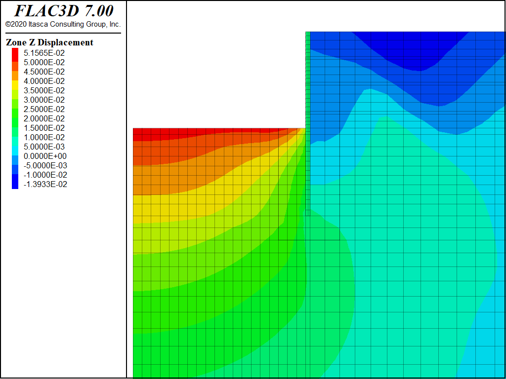
图 12：开挖至 14.35 m 深度引起的位移。
最终开挖步之后计算得到的墙体侧移与实测值在图 13（Figure 13） 中进行了比较。

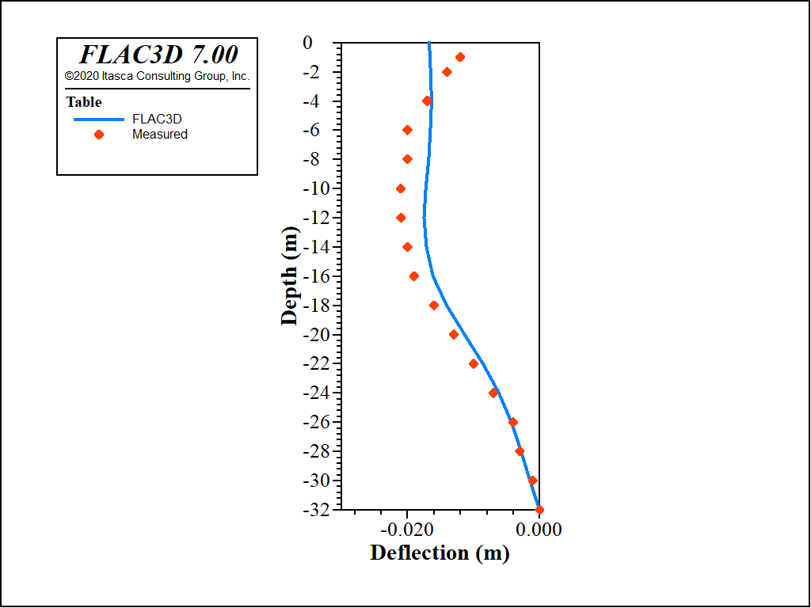
图 13：实测墙体侧移与 FLAC3D 计算结果。
墙体后方计算得到的地表沉降见图 14（Figure 14）。值得注意的是，墙体后方计算得到的地表沉降曲线总体向下，这与岩土工程观测一致。

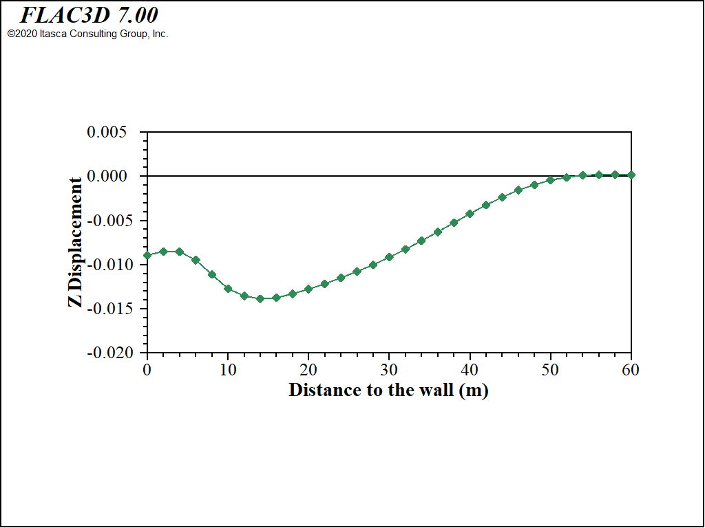
图 14：墙体后方计算的地表沉降。
参考文献
Schweiger, HF. “Results from numerical benchmark exercises in geotechnics,” in 5th European Conference Numerical Methods in Geotechnical Engineering, Vol. 1, pp. 305–314. Presses de l’ENPC/LCPC, Paris (2002).
数据文件
AnchoredExcavation-1.dat
model new
model large-strain off
model title "Anchored Excavation"
; 模型创建
program call 'geometry' suppress ; 使用 Building Blocks 交互式创建，
; 并从 State Pane 导出
zone generate from-building-blocks
program call 'names' suppress ; 使用 Model Pane 对网格单元命名并加密，
; 并从 State Pane 导出
zone face skin ; 命名模型边界
zone separate by-face clear-attach ...
range group 'WallLeft' or 'WallRight' or 'WallBottom' ; 提前将墙体
; 网格单元分离，
; 以便后续操作
zone attach by-face ; 重新连接加密后分离的网格单元
; 设置重力和流体参数
model grav 10 ; m/s^2
zone water density 1 ; Mg/m^3
zone water plane origin (0,0,-3) norm (0,0,-1)
; 赋予初始本构模型和参数
zone cmodel assign mohr-coulomb
zone property young 1.8e5 poisson 0.2 friction 35 dilation 5 ...
cohesion 1 range group 'Layer1' ; kPa
zone property young 3.0e5 poisson 0.2 friction 38 dilation 6 ...
cohesion 1 range group 'Layer2' ; kPa
; 设置湿密度和干密度
zone property density 1.9 range group 'Dry'
zone property density 2.0 range group 'Wet'
; 两侧为滚轴边界，底部和右侧固定
;zone face apply velocity-normal 0 range group 'South' or 'North'
zone face apply velocity-normal 0 range group 'South' or 'North'
zone face apply velocity-normal 0 range group 'West2'
zone face apply velocity (0,0,0) range group 'East2' or 'Bottom3'
; 初始化应力，各层采用不同的比值
zone initialize-stress ratio [1-math.sin(35*math.degrad)] range group 'Layer1'
zone initialize-stress ratio [1-math.sin(38*math.degrad)] range group 'Layer2'
;
zone history name 'disp' displacement-x position (30,0,0)
; 求解
model solve convergence 1
;
model save 'part-1'
AnchoredExcavation-2.dat
model restore 'part-1'
; 重置位移，以便跟踪相对上一状态的变化
zone gridpoint initialize displacement (0,0,0)
; 通过移除连接条件分离墙体
zone attach delete range group 'WallLeft' or 'WallRight' or 'WallBottom'
; 分别创建侧面和底面接触面
zone interface name 'side' create by-face ...
range group 'WallLeft' or 'WallRight'
zone interface name 'bot' create by-face range group 'WallBottom'
zone interface node property stiffness-shear 8e6 stiffness-normal 8e6 ...
friction 20.0
; 初始化接触面上的应力以加快收敛
zone interface node initialize-stress
;
model solve convergence 1
; 改变墙体的密度和刚度
zone cmodel assign elastic range group 'Wall'
zone prop density 2.4 young 3.0e7 poisson 0.15 range group 'Wall'
; 放宽刚度很大的墙体中的收敛标准，
; 以及其顶部周围网格单元中的收敛标准。
zone gridpoint initialize ratio-target 1e-2 ...
range position-x 28 33 position-z -4.8 0
zone gridpoint initialize ratio-target 1e-2 range group 'Wall'
;
model solve convergence 1
;
model save 'part-2'
AnchoredExcavation-3.dat
model restore 'part-2'
; 重置位移，以跟踪各阶段产生的增量变化。
zone gridpoint initialize displacement (0,0,0)
; 为各层赋予塑性硬化模型和参数。
zone cmodel assign plastic-hardening range group 'Wall' not
zone property pressure-ref 100 poisson 0.2 failure-ratio 0.9 cohesion 1
zone property stiffness-50-reference 7.5e4 stiffnes-ur-reference 3.0e5 ...
stiffness-oedometer-reference 7.5e4 ...
range group 'Layer2' group 'Wall' not
zone property stiffness-50-reference 4.5e4 stiffness-ur-reference 1.8e5 ...
stiffness-oedometer-reference 4.5e4 ...
range group 'Layer1' group 'Wall' not
zone property exponent 0.55 friction 35 dilation 5 ...
over-consolidation-ratio 1 ...
range group 'Layer1' group 'Wall' not
zone property exponent 0.55 friction 38 dilation 6 ...
over-consolidation-ratio 1 ...
range group 'Layer2' group 'Wall' not
zone property coefficient-normally-consolidation ...
[1-math.sin(35*math.degrad)] ...
range group 'Layer1' group 'Wall' not
zone property coefficient-normally-consolidation ...
[1-math.sin(38*math.degrad)] ...
range group 'Layer2' group 'Wall' not
; 使用 FISH 初始化有效应力参数。
fish operator ini_ph(z)
if z.model(z) = 'plastic-hardening'
local pp = zone.pp(z)
zone.prop(z,'stress-1-effective') = zone.stress.min(z) + pp
zone.prop(z,'stress-2-effective') = zone.stress.int(z) + pp
zone.prop(z,'stress-3-effective') = zone.stress.max(z) + pp
endif
end
[ini_ph(::zone.list)])
; 达到近似平衡
model solve convergence 1
;
model save 'part-3'
AnchoredExcavation-4.dat
model restore 'part-3'
; 重置位移，以跟踪各阶段产生的增量变化。
zone gridpoint initialize displacement (0,0,0)
; 清除墙体中的孔隙水压力
zone gridpoint initialize pore-pressure 0 range group 'Wall'
; 分 5 步降水，逐步降低地下水位
; （保持有效应力不变）
; 第 1 步
zone water plane origin (0,0,-6) normal (0,0,1) effective ...
range group 'Left' position-z -30 0
zone property density 1.9 range group 'Left' position-z -6 0
model solve convergence 1
; 第 2 步
zone water plane origin (0,0,-9) normal (0,0,1) effective ...
range group 'Left' position-z -30 0
zone property density 1.9 range group 'Left' position-z -9 0
model solve convergence 1
; 第 3 步
zone water plane origin (0,0,-12) normal (0,0,1) effective ...
range group 'Left' position-z -30 0
zone property density 1.9 range group 'Left' position-z -12 0
model solve convergence 1
; 第 4 步
zone water plane origin (0,0,-15) normal (0,0,1) effective ...
range group 'Left' position-z -30 0
zone property density 1.9 range group 'Left' position-z -15 0
model solve convergence 1
; 第 5 步
zone water plane origin (0,0,-17.9) normal (0,0,1) effective ...
range group 'Left' position-z -30 0
zone property density 1.9 range group 'Left' position-z -17.9 0
model solve convergence 1
;
model solve convergence 1
;
model save 'part-4'
AnchoredExcavation-5.dat
; 开挖至 -4.80 m
model restore 'part-4'
; 重置位移，以跟踪各阶段产生的增量变化。
zone gridpoint initialize displacement (0,0,0)
; 删除开挖范围内的网格单元，求解并保存。
zone delete range group 'Excavation1'
zone history name 'disp2' displacement-x position (30,0,0)
model solve convergence 1
model save 'part-5'
AnchoredExcavation-6.dat
model restore 'part-5'
; 这里创建代表锚索布置的几何体，
; 也可以直接从 CAD 导入。
program call 'cablegeom' suppress
; 创建第一组注浆和未注浆锚索并设置参数
struct cable import from-geometry 'cable' offset (0,1.35,0) ...
group 'free1' id 1 range group 'free1'
struct cable import from-geometry 'cable' offset (0,1.35,0) ...
group 'grout1' segments 8 id 1 range group 'grout1'
struct cable prop young 2.1e8 cross-section-area 0.00176 ...
grout-stiffness 0 grout-cohesion 0 ...
grout-perimeter 0.15 range group 'free1'
struct cable prop young 2.1e8 cross-section-area 0.00176 ...
grout-stiffness 4e6 grout-cohesion 1e5 ...
grout-perimeter 0.15 range group 'grout1'
; 将锚索首个节点与网格单元刚性连接
struct link delete range group 'free1' position-x 30.4
struct link create target zone range group 'free1' position-x 30.4
; 对锚索施加预应力，调整至平衡，然后释放
; 锚索张力使其自然调整。
struct cable apply tension value 901.6 range group 'free1'
model solve convergence 1
struct cable apply tension active off
;
model save 'part-6'
AnchoredExcavation-7.dat
model large-strain off
; 开挖至 -9.30 m
model rest 'part-6'
;
zone delete range group 'Excavation2'
model solve convergence 1
;
model save 'part-7'
AnchoredExcavation-8.dat
model restore 'part-7'
; 创建第二组注浆和未注浆锚索并设置参数
struct cable import from-geometry 'cable' offset (0,0.675,0) ...
group 'free2' id 2 range group 'free2'
struct cable import from-geometry 'cable' offset (0,0.675,0) ...
group 'grout2' segments 8 id 2 range group 'grout2'
struct cable import from-geometry 'cable' offset (0,2.025,0) ...
group 'free2' id 2 range group 'free2'
struct cable import from-geometry 'cable' offset (0,2.025,0) ...
group 'grout2' segments 8 id 2 range group 'grout2'
struct cable prop young 2.1e8 cross-section-area 0.0015 ...
grout-stiffness 0 grout-cohesion 0 ...
grout-perimeter 0.1373 range group 'free2'
struct cable prop young 2.1e8 cross-section-area 0.0015 ...
grout-stiffness 4e6 grout-cohesion 1e5 ...
grout-perimeter 0.1373 range group 'grout2'
; 将锚索首个节点与网格单元刚性连接
struct link delete range group 'free2' position-x 30.4
struct link create target zone range group 'free2' position-x 30.4
; 对锚索施加预应力，调整至平衡，
; 然后释放锚索张力使其自然调整。
struct cable apply tension value 945 range group 'free2'
model solve convergence 1
struct cable apply tension active off
;
model save 'part-8'
AnchoredExcavation-9.dat
model large-strain off
; 开挖至 -14.35 m
model rest 'part-8'
;
zone delete range group 'Excavation3'
model solve convergence 1
;
model save 'part-9'
AnchoredExcavation-10.dat
model restore 'part-9'
; 创建第二组注浆和未注浆锚索并设置参数
struct cable import from-geometry 'cable' offset (0,0.675,0) ...
group 'free3' id 3 range group 'free3'
struct cable import from-geometry 'cable' offset (0,0.675,0) ...
group 'grout3' segments 8 id 3 range group 'grout3'
struct cable import from-geometry 'cable' offset (0,2.025,0) ...
group 'free3' id 3 range group 'free3'
struct cable import from-geometry 'cable' offset (0,2.025,0) ...
group 'grout3' segments 8 id 3 range group 'grout3'
struct cable prop young 2.1e8 cross-section-area 0.0015 ...
grout-stiffness 0 grout-cohesion 0 ...
grout-perimeter 0.1373 range group 'free3'
struct cable prop young 2.1e8 cross-section-area 0.0015 ...
grout-stiffness 4e6 grout-cohesion 1e5 ...
grout-perimeter 0.1373 range group 'grout3'
; 将锚索首个节点与网格单元刚性连接
struct link delete range group 'free3' position-x 30.4
struct link create target zone range group 'free3' position-x 30.4
; 对锚索施加预应力，调整至平衡，
; 然后释放锚索张力使其自然调整。
struct cable apply tension value 980 range group 'free3'
model solve convergence 1
struct cable apply tension active off
;
model save 'part-10'
AnchoredExcavation-11.dat
model large-strain off
; 开挖至 -16.8 m
model rest 'part-10'
;
zone delete range group 'Excavation4'
model solve convergence 1
;
model save 'part-11'
| 这些内容对您有帮助吗？… | FLAC3D © 2019, Itasca | 原文更新于 2020 年 10 月 8 日 |